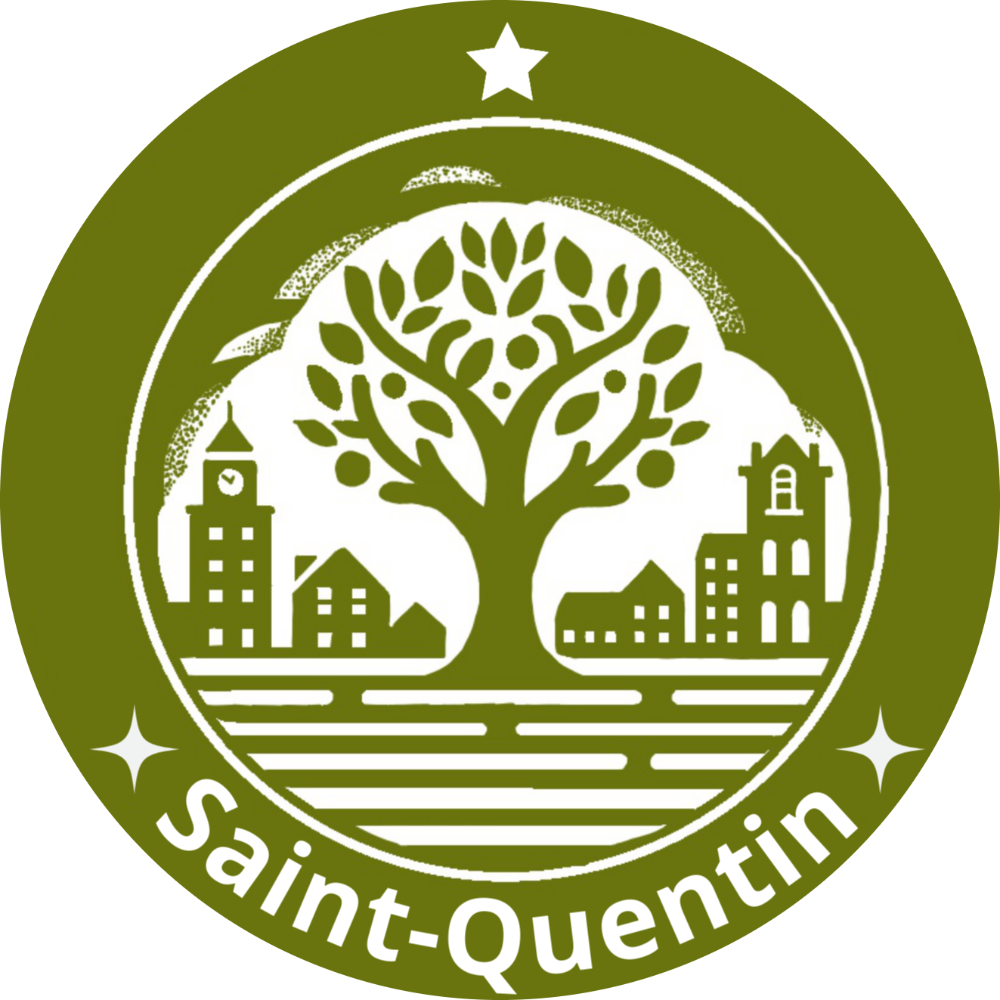
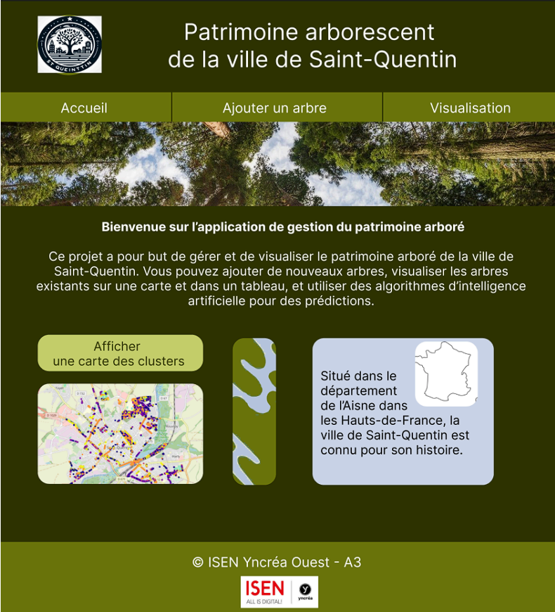
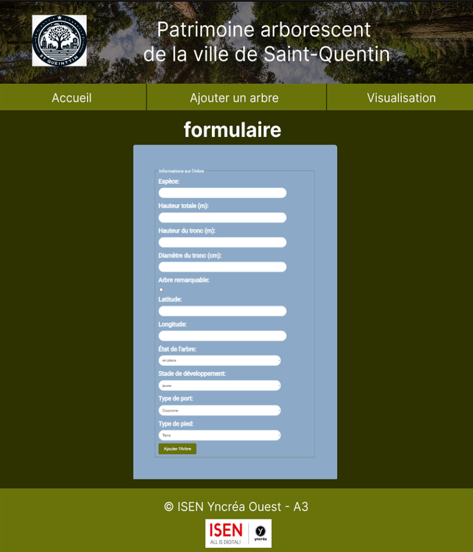
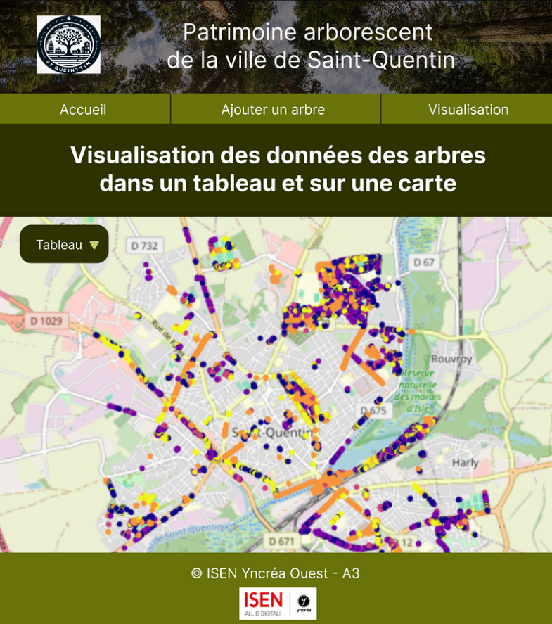
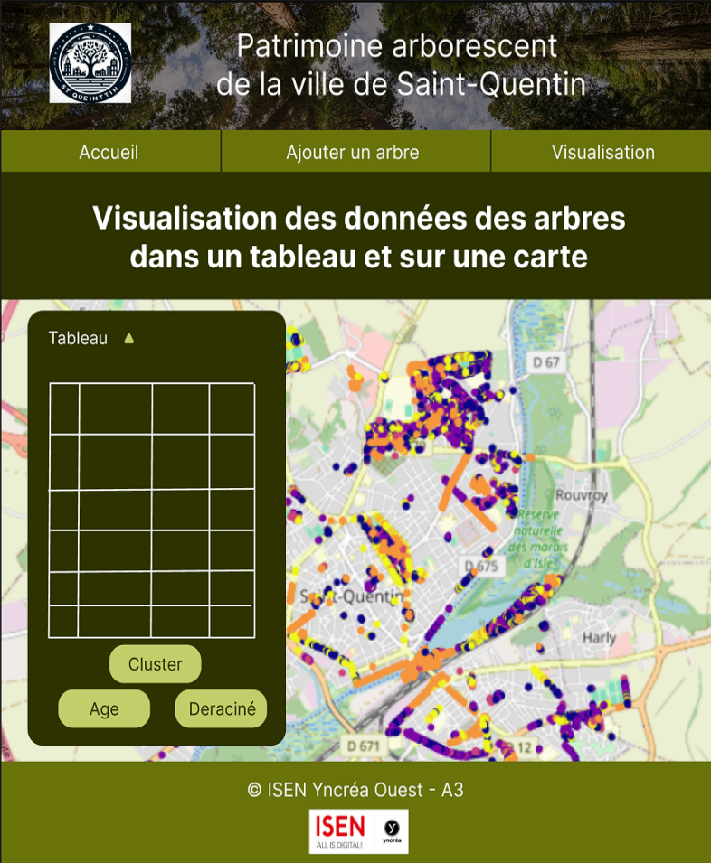
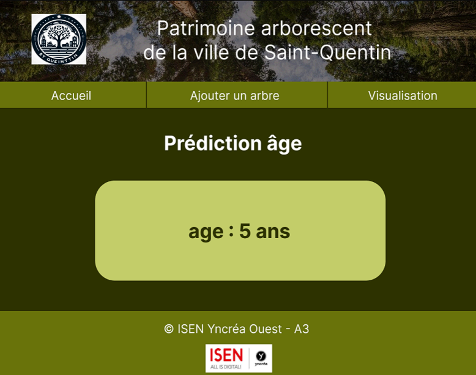
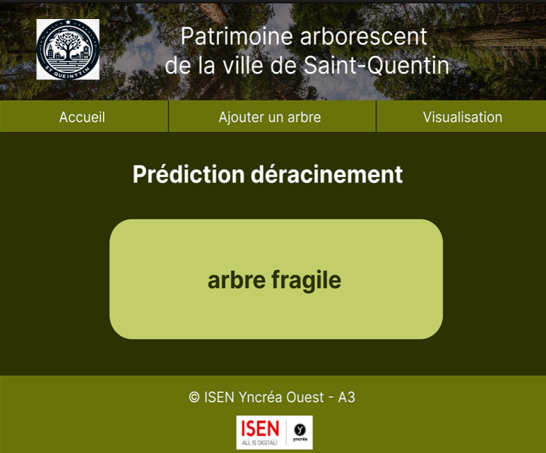

Saint-Quentin
Etude de la population arborée

L’objectif de ce projet est la conception et le développement d'une application dédiée à l'étude approfondie du patrimoine arboré.
Elle permettra donc d'explorer et d'analyser le patrimoine arboré de la ville de Saint-Quentin. Le projet permet une approche pluridisciplinaire
et combine des méthodes de collecte, de traitement et de visualisation de données afin de fournir des données précieuses sur les arbres de la ville.
Lors de ce projet, j’ai principalement travaillé sur l’affichage des cartes et la partie front du projet web.
Big Data
La partie big data consiste à étudier les données sur le patrimoine arboré de la ville. Pour cela, nous avons récupéré les données d’un fichier CSV
issu du site data.gouv. Nous avons ensuite nettoyé les données (valeurs manquantes, doublons, autres erreurs, ...) pour assurer leur fiabilité.
Nous avions ensuite utilisé du R pour afficher les données sous différents formats (diagrammes, cartes interactives, tableaux) à l’aide de modèles
statistiques pour les étudier.
IA
Cette partie du projet a pour but la compréhension détaillée des différentes étapes d'un programme d'apprentissage automatique, de la préparation des
données, à l'évaluation des modèles. Il est également question d’étude de l'évaluation des performances des méthodes d'apprentissage automatique, en
choisissant les métriques pertinentes et en interprétant correctement les résultats obtenus.
Diverses techniques d'apprentissage automatique sont donc explorées. Il y a notamment le clustering pour l'apprentissage non supervisé et la
classification/régression pour l'apprentissage supervisé. Dans ce contexte, les données sur les arbres sont collectées et modélisées minutieusement,
en mettant l'accent sur la prédiction de l'âge des arbres et la création d'une visualisation cartographique interactive pour classifier les arbres
selon leur taille. De plus, un modèle d'intelligence artificielle est développé pour prédire l'âge des arbres en utilisant diverses caractéristiques,
et un système d'alerte est mis en place pour anticiper les arbres susceptibles d'être déracinés lors de tempêtes.
WEB
Dans la partie WEB, l’objectif était la conception et le développement d’une application de gestion du patrimoine arboré pour la ville de Saint-Quentin.
Il y avait différentes pages à réaliser. Avant le développement de l’application web, il a fallu réaliser la charte graphique puis réaliser la maquette
du site à l'aide de Figma. Tout d’abord, il y avait une page d’accueil puis un formulaire pour ajouter un arbre dans la base de données :


Enfin la dernière page qui permettait la visualisation des arbres sur une carte avec prédiction des clusters sur cette dernière et
affichage de la base de données dans un tableau. Il y a également deux boutons qui envoient sur deux pages différentes. L’un
pour l’affichage de la prédiction de l’âge des arbres et l’autre pour le déracinement des arbres.




Ensuite, est venu le développement du site (Front et Back) avec la réalisation du MCD et de l'interface client serveur. La page de visualisation a été
légèrement modifiée, car nous n'avions pas bien jugé nos capacités de création. De plus, nous n'avons désormais plus accès à la base de données, le site
n'est donc plus fonctionnel, c'est pourquoi il n'y a pas d'image de ce dernier.